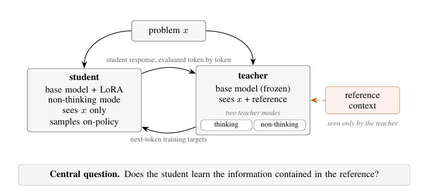
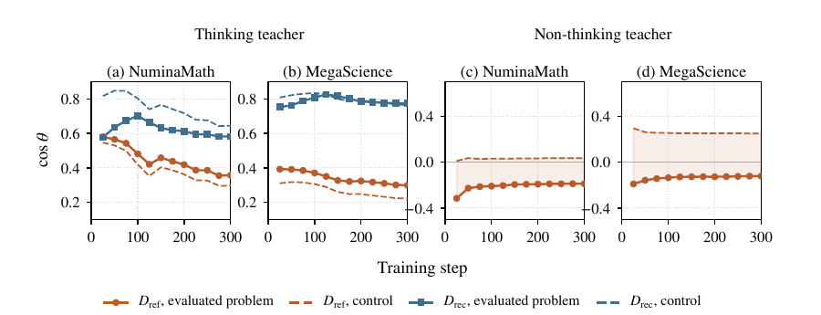

Rethinking Privileged Information in On-Policy Self-Distillation: The Reference Might Not Be Doing What You Think
Paper: arXiv 2608.18271 (v1, Aug 18 2026), by Samyak Shrestha and Alexander Tessier. 21 pages, 7 figures. Grounded in the full paper PDF text; figures extracted from the PDF.
TL;DR
- Setup: OPSD instantiates teacher and student from the same frozen base model — the student sees only the problem \(x\); the teacher additionally sees privileged context (a reference solution \(r\)) and supervises the student's own rollouts token-by-token. This paper asks the question the whole OPSD wave has been assuming away: does the student actually learn the information in the reference, or is it just recovering behavior already in the base model?
- Performance says the reference is not load-bearing. On Qwen3-8B/NuminaMath, a mismatched reference (a solution to a different problem) beats the correct reference, 67.6 vs 59.5 average across MATH-500/AIME24/AIME25/HMMT25; with a thinking teacher, dropping the reference entirely is a wash (60.3 no-ref vs 59.4 with-ref). Whether the correct reference helps at all depends on teacher mode, model scale (8B/4B/1.7B), and dataset.
- Distribution shifts say the same. Decomposing teacher supervision into a reference direction \(D_{\text{ref}}\) and a recovery direction \(D_{\text{rec}}\), the student's prediction change \(\Delta S_c\) aligns far more with \(D_{\text{rec}}\) — and with the base model's thinking-mode direction — than with what the reference injected; controls built from wrong-problem references reproduce most of the alignment. Neither gains nor alignment metrics can tell you what privileged information contributed.
Why this matters
Your distillation shelf has been accumulating OPSD variants at a startling rate — privileged references, rubric feedback, skills-as-context, experience libraries, purified signals — all built on the intuition that a same-base teacher with extra context is a more informed teacher, and that KL-ing the student toward it transfers the extra information. This paper is the measurement-hygiene intervention for that entire line: it constructs the two null hypotheses everyone skips (wrong-problem reference; reference-free teacher) and shows they explain most of both the performance and the distributional movement. The uncomfortable reading: much of OPSD's gain may be mode transfer — a non-thinking student being pulled toward the base model's latent thinking behavior — with the privileged context acting mostly as a nonspecific perturbation that turns the teacher into a slightly-different-model, not as a channel for problem-specific information.
That reframing matters practically. If a mismatched reference works as well as (or better than) the correct one, then the expensive part of many OPSD pipelines — curating correct, per-problem privileged context — may be optional on some tasks, which is exactly the door u-OPSD-style unsupervised variants walked through. And it matters methodologically: several papers in this tracker justify design choices by "the student's distribution moved toward the teacher direction"; Table 2 here shows control directions from other problems capture 0.94–0.98 of the squared change, so span coverage and cosine improvements are close to unfalsifiable as evidence.

Figure 1 from the paper: student and teacher are the same base model under different contexts; the experiments vary the teacher's generation mode and reference while holding the student fixed.The core idea
The OPSD objective is standard: student \(\pi_S\) samples \(y \sim \pi_S(\cdot \mid x)\), and a frozen teacher \(\pi_T\) (same base) with reference \(r\) supervises every position:
with \(D_{\mathrm{JSD}}\) the generalized Jensen–Shannon divergence (\(\beta = 0\) here). The analytical move is to split the teacher's total supervision at each position into two log-probability directions over the vocabulary. With \(T = \pi_T(\cdot \mid x, r, y_{<t})\), \(N = \pi_T(\cdot \mid x, y_{<t})\) (teacher without the reference), and \(S_c\) the student at checkpoint \(c\):
\(D_{\text{ref}}\) is what the reference injects; \(D_{\text{rec}}\) is the gap the student could close by recovering the reference-free teacher — which, for a non-thinking teacher, is the initial student itself (\(N = S_0\), \(D_{\text{rec}} = 0\)). A third direction \(D_{\text{think}} = \log B - \log S_0\), with \(B\) the base model in thinking mode, probes mode transfer. The student's movement is \(\Delta S_c = \log S_c - \log S_0\), measured on frozen step-0 responses so only the student varies. Alignment is read via projection coefficients \(\beta_D = \langle \Delta S_c, D\rangle / \|D\|^2\) and cosines \(\cos\theta_D\), and — the key control — every measurement is repeated with directions \(D^{*}\) built from a different problem's teacher context.
At step 0 the reference is genuinely a big part of the signal: its projection onto total supervision is \(w_{\text{ref}} = 0.46\) (NuminaMath) and \(0.39\) (MegaScience). The question is whether the student absorbs that component.
How it works
Train (OPSD):
for each problem x in D: # 10k NuminaMath / 10k MegaScience
y ~ π_S(·|x) # student: Qwen3 base + LoRA r64, non-thinking
targets ← π_T(·|x, r, y_<t) for all t # teacher: same frozen base; thinking or not;
update π_S to minimize token-level JSD # r ∈ {correct, mismatched, hint, answer-only,
# canonical, 8B/32B trace, none}
Analyze (on frozen step-0 responses):
fix y⁰ ~ π_S⁰(·|x); compute per-position log-prob vectors:
T, N, B → D_ref = logT−logN, D_rec = logN−logS₀, D_think = logB−logS₀
ΔS_c = logS_c − logS₀ at each checkpoint c
measure cos(ΔS_c, D) and β for D ∈ {D_ref, D_rec, D_think}
CONTROL: rebuild D* using teacher context from a DIFFERENT problem (3 pairings)
verdict: does the evaluated-problem direction beat its own control?
Models: Qwen3-8B main, repeated at 4B and 1.7B. 300 steps, lr 5e-6, batch 32, vLLM rollouts at temperature 1.1. Evaluation in non-thinking mode (Avg@12 for AIME/HMMT/GPQA-D), with differences claimed only when paired 95% intervals exclude zero.
Results
- Correct reference ≠ consistent benefit. Qwen3-8B, NuminaMath: base 35.6 → non-thinking teacher with correct ref 59.5, with mismatched ref 67.6 (better on AIME25 +12.5 and HMMT25 +11.6); thinking teacher with ref 59.4, without ref 60.3. MegaScience: thinking teacher dominates (60.7/60.8 with/without ref — a 0.1-point difference) while non-thinking barely moves the base (53.3/53.7 vs 52.8). At 4B/1.7B the reference does help on some NuminaMath competitions — the effect is real but conditional on mode × scale × dataset.
- The reference direction doesn't even point where thinking points. \(\cos(D_{\text{ref}}, D_{\text{think}})\) is lower for the correct reference than for a wrong-problem reference across all five reference types (canonical, 32B trace, 8B trace, hint, answer-only) — the correct reference is not special in inducing think-like teacher behavior.
- Students track recovery, not reference. Under a thinking teacher, \(\Delta S_c\) aligns with \(D_{\text{rec}}\) (cos ~0.6–0.8) far above \(D_{\text{ref}}\) (~0.3–0.4), and control trajectories run parallel; under a non-thinking teacher the correct-reference alignment is below its control by −0.23 (NuminaMath) and −0.38 (MegaScience) at step 150. Beyond-control alignment with \(D_{\text{ref}}\) is at most +0.05/+0.10, and with \(D_{\text{rec}}\) it's −0.08/+0.01: essentially nothing problem-specific.
- Span coverage is a vanity metric. \(R_c^2\) (fraction of \(\|\Delta S_c\|^2\) inside the span of two teacher directions) is 0.88–0.97 for evaluated problems — and 0.94–0.98 for wrong-problem controls. High \(R^2\) cannot certify that supervision carried problem-specific information.
- Bigger cosine gaps don't buy bigger gains: the reference-vs-control cosine advantage grows 8B → 4B → 1.7B, yet at 1.7B on MegaScience the no-reference student wins all three science benchmarks.

Figure 3 from the paper: the student's movement tracks the recovery direction, controls (dashed) reproduce most alignment, and under a non-thinking teacher the correct reference aligns worse than a wrong-problem reference.How it connects
- dapd-dual-anchored-distillation — DAPD named the "privilege illusion" and engineered around it; this paper supplies the clean instrument (decomposition + wrong-problem controls) showing the illusion is measurable at the logit level. DAPD's fix and this diagnosis are two halves of one argument.
- opd-no-free-lunch (MOPD) and opd-dual-nature — both found OPSD's gains come with distributional strings attached; the recovery-direction result here proposes what the gains largely are: re-surfacing base-model thinking behavior in a non-thinking student.
- opsd-without-supervision (u-OPSD) — if a mismatched reference can outperform the correct one, majority-vote pseudo-references stop looking like a compromise and start looking like the honest baseline. This paper is the strongest post-hoc justification of that design.
- ocsd-observation-calibrated-self-distillation and lopd-latent-self-distillation — the agentic/latent ends of privileged context. Both should be re-run with the wrong-problem control before their privileged channels are credited with information transfer.
- ai4ai-strong-to-weak-scaffolding — strong-to-weak transfer via builder-designed harnesses assumes the privileged artifact carries task information; the conditional results here (mode × scale × dataset) suggest auditing which regimes that holds in.
Critical take
The paper is admirably careful about what it does not claim — it never says the reference is useless, only that gains and alignment can't certify what it contributes — but three caveats bound the reading. First, each condition is trained once; with the mismatched-vs-correct gap on NuminaMath being the headline (67.6 vs 59.5), a seed-variance estimate is conspicuously missing, and OPSD runs are cheap enough at 8B-LoRA that this feels avoidable. Second, the evaluation applies a repetition penalty of 1.3 to students trained with non-thinking teachers (1.0 otherwise) — a hint that those students degenerate without decoding-time correction, which muddies cross-condition performance comparisons. Third, everything is Qwen3 + math/science; Qwen3's strong latent thinking mode is precisely what makes "recovery of base behavior" available as an explanation, and the story could differ for models without a suppressed reasoning mode, or for tasks (coding, agentic tool use) where references contain genuinely non-recoverable facts. Also worth saying: the wrong-problem reference winning (not just tying) on NuminaMath is left mechanistically unexplained — entropy regularization of the teacher? mode perturbation? — and that unexplained win is arguably the most interesting result in the paper. (Inferred framing, not the authors': the mismatched reference may act like context-noise that keeps the teacher from overcommitting to reference tokens — verify against their Appendix C before repeating.)
If you remember three things
- Run the wrong-problem control. Controls built from other problems' references reproduced 0.94–0.98 of the student's squared distributional change — any OPSD paper claiming information transfer without this control is asserting, not showing.
- On NuminaMath at 8B, the mismatched reference beat the correct one 67.6 to 59.5, and a thinking teacher without any reference matched one with it — the correct reference is not consistently load-bearing.
- OPSD's student tracks the recovery direction \(D_{\text{rec}}\) and the base model's thinking direction, not the reference direction — treat "distribution moved toward teacher" as evidence of mode transfer first, information transfer only after controls.